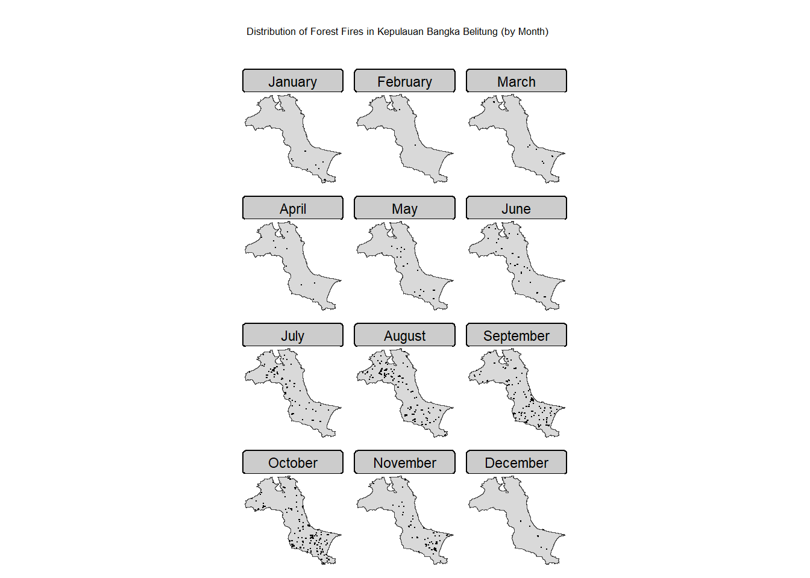
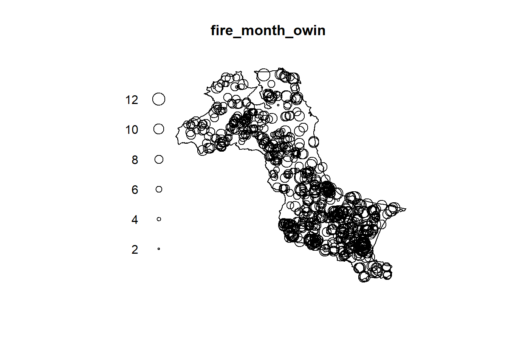
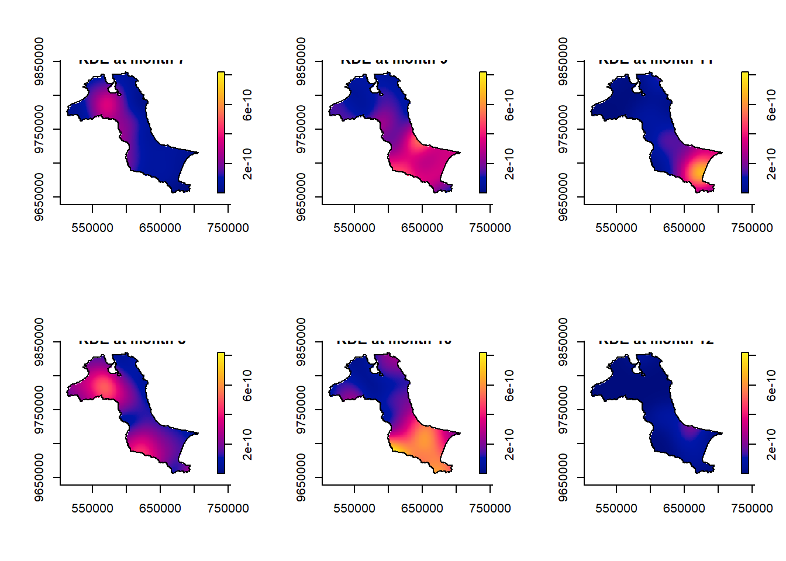

pacman::p_load(sf, terra, spatstat, sparr, tmap, tidyverse)Hands-on Exercise 3
1 Overview
A spatio-temporal point process (also called space-time or spatial-temporal point process) is a random collection of points, where each point represents the time and location of an event. Examples of events include incidence of disease, sightings or births of a species, or the occurrences of fires, earthquakes, lightning strikes, tsunamis, or volcanic eruptions.
The analysis of spatio-temporal point patterns is becoming increasingly necessary, given the rapid emergence of geographically and temporally indexed data in a wide range of fields. Several spatio-temporal point patterns analysis methods have been introduced and implemented in R in the last ten years. This chapter shows how various R packages can be combined to run a set of spatio-temporal point pattern analyses in a guided and intuitive way. A real world forest fire events in Kepulauan Bangka Belitung, Indonesia from 1st January 2023 to 31st December 2023 is used to illustrate the methods, procedures and interpretations.
The specific questions we would like to answer are:
- Are the locations of forest fire in Kepulauan Bangka Belitung spatial and spatio-temporally independent?
- If the answer is NO, where and when do the observed forest fire locations tend to cluster?
2 Data
For the purpose of this exercise, two data sets will be used, they are:
forestfires, a CSV file providing locations of forest fires detected from the Moderate Resolution Imaging Spectroradiometer (MODIS) sensor data.
The data are downloaded from Fire Information for Resource Management System.Kepulauan_Bangka_Belitung, an ESRI shapefile showing the sub-district (i.e. kelurahan) boundary of Kepulauan Bangka Belitung.
The data set was downloaded from Indonesia Geospatial portal.
The original data covers the whole Indonesia. For the purpose of this exercise, only sub-districts within Kepulauan Bangka Belitung are extracted.
3 Installing and Loading the R packages
For the purpose of this study, six R packages will be used. They are:
- sf – provides functions for importing, processing, and wrangling geospatial data.
- raster – for handling raster data in R.
- spatstat – for performing Spatial Point Patterns Analysis such as
Kcross,Lcross, etc. - sparr – provides functions to estimate fixed and adaptive kernel-smoothed spatial relative risk surfaces via the density-ratio method and perform subsequent inference. Fixed-bandwidth spatiotemporal density and relative risk estimation is also supported.
- tmap – provides functions to produce cartographic quality thematic maps.
- tidyverse – a family of R packages that provide functions to perform common data science tasks including, but not limited to, data import, data transformation, data wrangling, and data visualisation.
4 Importing and Preparing Study Area
4.1 Importing study area
kbb_sf <- st_read(
dsn = "C:/govanzz/ISSS626_GEO_AUG_2025/Hands-on_Ex/Hands-on_Ex03/Data/geospatial",
layer = "Kepulauan_Bangka_Belitung"
) %>%
st_union() %>%
st_zm(drop = TRUE, what = "ZM") %>%
st_transform(crs = 32748) # WGS 84 / UTM zone 48SReading layer `Kepulauan_Bangka_Belitung' from data source
`C:\govanzz\ISSS626_GEO_AUG_2025\Hands-on_Ex\Hands-on_Ex03\Data\geospatial'
using driver `ESRI Shapefile'
Simple feature collection with 297 features and 26 fields
Geometry type: POLYGON
Dimension: XYZ
Bounding box: xmin: 105.1085 ymin: -3.116593 xmax: 106.8488 ymax: -1.501603
z_range: zmin: 0 zmax: 0
Geodetic CRS: WGS 844.2 Converting OWIN
Next, as.owin() is used to convert kbb into an owin object.
kbb_owin <- as.owin(kbb_sf)
kbb_owinwindow: polygonal boundary
enclosing rectangle: [512066.8, 705559.4] x [9655398, 9834006] unitsNext, class() is used to confirm if the output is indeed an owin object.
class(kbb_owin)[1] "owin"5 Importing and Preparing Forest Fire data
Next, we will import the forest fire data set (i.e. forestfires.csv) into R environment.
fire_sf <- read_csv("C:/govanzz/ISSS626_GEO_AUG_2025/Hands-on_Ex/Hands-on_Ex03/Data/aspatial/forestfires.csv") %>%
st_as_sf(coords = c("longitude", "latitude"),
crs = 4326) %>%
st_transform(crs = 32748)fire_sf <- fire_sf %>%
mutate(DayofYear = yday(acq_date)) %>%
mutate(Month_num = month(acq_date)) %>%
mutate(Month_fac = month(acq_date,
label = TRUE,
abbr = FALSE))6 Visualising the Fire Points
6.1 Overall plot
tm_shape(kbb_sf)+
tm_polygons() +
tm_shape(fire_sf) +
tm_dots()
6.2 Visuaising geographic distribution of forest fires by month
tm <- tm_shape(kbb_sf) + tm_polygons() +
tm_shape(fire_sf) + tm_dots(size = 0.08) +
tm_facets(by = "Month_fac", ncol = 3, free.coords = FALSE) +
tm_title("Distribution of Forest Fires in Kepulauan Bangka Belitung (by Month)") +
tm_layout(legend.show = FALSE, frame = FALSE)
tm
7 Computing STKDE by Month
In this section, we will learn how to compute STKDE by using spattemp.density() of sparr package
7.1 Extracting forest fires by month
The code chunk below is used to remove the unwanted fields from fire_sf sf data.frame. This is because as.ppp() only need the mark field and geometry field from the input sf data.frame.
fire_month <- fire_sf %>%
select(Month_num)7.2 Creating ppp
The code chunk below is used to derive a ppp object called fire_month from fire_month sf data.frame.
fire_month_ppp <- as.ppp(fire_month)
fire_month_pppMarked planar point pattern: 741 points
marks are numeric, of storage type 'double'
window: rectangle = [521564.1, 695791] x [9658137, 9828767] unitsThe code chunk below is used to check the output is in the correct object class.
summary(fire_month_ppp)Marked planar point pattern: 741 points
Average intensity 2.49258e-08 points per square unit
Coordinates are given to 10 decimal places
marks are numeric, of type 'double'
Summary:
Min. 1st Qu. Median Mean 3rd Qu. Max.
1.000 8.000 9.000 8.579 10.000 12.000
Window: rectangle = [521564.1, 695791] x [9658137, 9828767] units
(174200 x 170600 units)
Window area = 29728200000 square unitsNext, we will check if there are duplicated point events by using the code chunk below.
any(duplicated(fire_month_ppp))[1] FALSE7.3 Including Owin object
The code chunk below is used to combine origin_am_ppp and am_owin objects into one.
fire_month_owin <- fire_month_ppp[kbb_owin]
summary(fire_month_owin)Marked planar point pattern: 741 points
Average intensity 6.42469e-08 points per square unit
Coordinates are given to 10 decimal places
marks are numeric, of type 'double'
Summary:
Min. 1st Qu. Median Mean 3rd Qu. Max.
1.000 8.000 9.000 8.579 10.000 12.000
Window: polygonal boundary
single connected closed polygon with 47493 vertices
enclosing rectangle: [512066.8, 705559.4] x [9655398, 9834006] units
(193500 x 178600 units)
Window area = 11533600000 square units
Fraction of frame area: 0.334plot(fire_month_owin)
7.4 Computing Spatio-temporal KDE
Next, spattemp.density() of sparr package is used to compute the STKDE.
st_kde <- spattemp.density(fire_month_owin)
summary(st_kde)Spatiotemporal Kernel Density Estimate
Bandwidths
h = 15102.47 (spatial)
lambda = 0.0304 (temporal)
No. of observations
741
Spatial bound
Type: polygonal
2D enclosure: [512066.8, 705559.4] x [9655398, 9834006]
Temporal bound
[1, 12]
Evaluation
128 x 128 x 12 trivariate lattice
Density range: [1.233458e-27, 8.202976e-10]7.5 Plotting the spatio-temporal KDE object
In the code chunk below, plot() of R base is used to the KDE for between July 2023 - December 2023.
tims <- c(7,8,9,10,11,12)
par(mfcol=c(2,3))
for(i in tims){
plot(st_kde, i,
override.par=FALSE,
fix.range=TRUE,
main=paste("KDE at month",i))
}
8 Computing STKDE by Day of Year
In this section, We will learn how to computer the STKDE of forest fires by day of year.